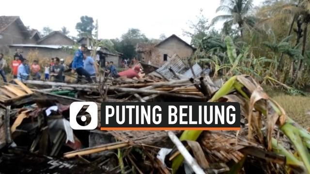
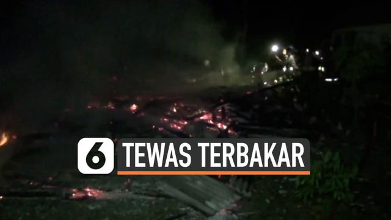

Rumah Sakit Sari Asih
Kami Hanya Melayani Semampunya
News
Berita
Finance
Hot
Sport
Food
Healt
Contact Us
EXIT
Lihat lainnya


puluhan rumah rusak di terjang angin puting beliung
Tragis penderita stroke tewas terbakar dalam rumah
© 2020 permata hospital. depeloved